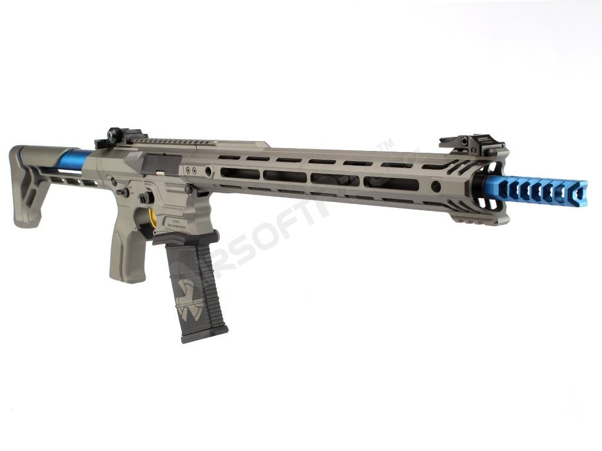
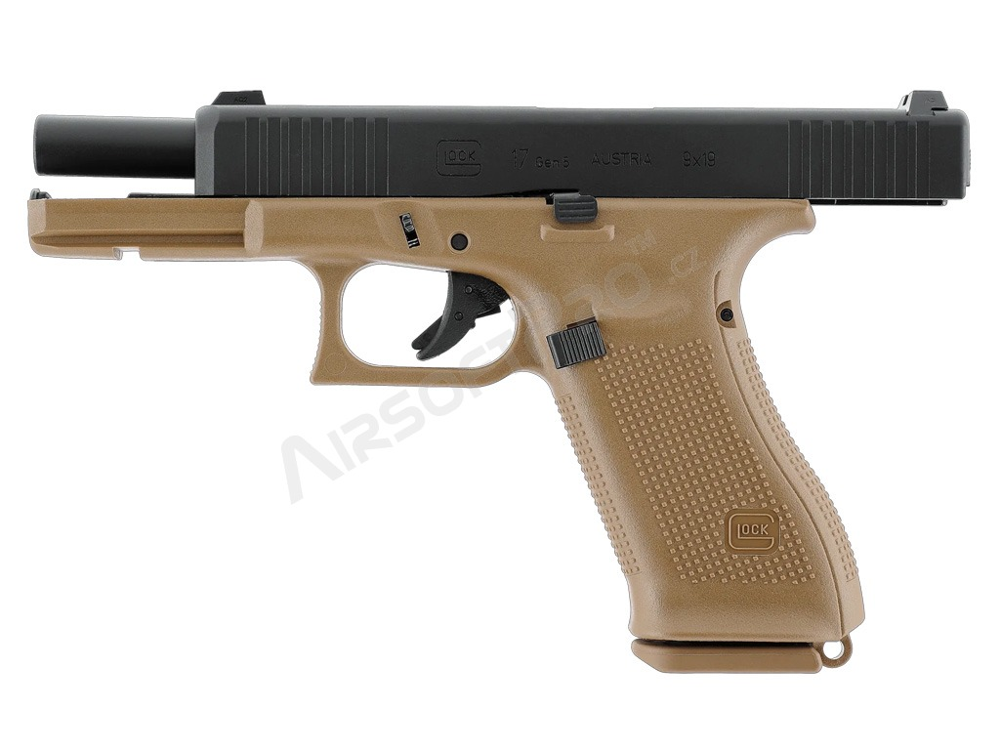
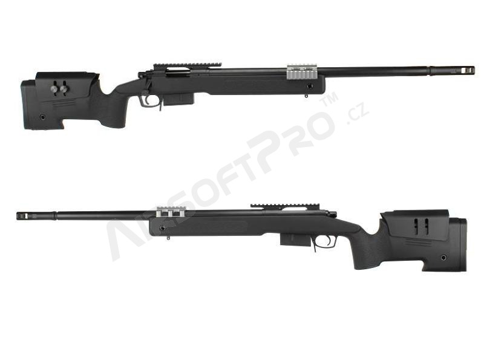

AEG zbraně
Elektricky poháněné pušky s dobíjecím akumulátorem. Ideální pro terénní hry díky vysoké spolehlivosti a jednoduché obsluze.
Více o AEG →Komplexní průvodce pro začátečníky i zkušené střelce. Vše o vybavení, legislativě, bezpečnosti a výběru té správné zbraně.
Zjistit více o airsoftuProzkoumejte tři hlavní kategorie, které pokrývají nejpopulárnější typy airsoftových zbraní.

Elektricky poháněné pušky s dobíjecím akumulátorem. Ideální pro terénní hry díky vysoké spolehlivosti a jednoduché obsluze.
Více o AEG →
Plynové zbraně se zpětným rázem (Gas Blowback). Poskytují realistický pocit ze střelby a jsou oblíbené jako záložní zbraň.
Více o GBB →
Přesné pušky pro dlouhé vzdálenosti. Většinou na jarní pohon, vybavené optickým zaměřovačem. Vyžadují trpělivost a taktické myšlení.
Více o sniper →Airsoft je víc než jen střílení – je to taktický sport, který rozvíjí spolupráci v týmu, fyzickou kondici a schopnost rychlého rozhodování. Každá hra je jiná a vyžaduje kombinaci strategie, komunikace a správného vybavení.
Na tomto webu najdete vše potřebné: od základního přehledu typů zbraní přes technické specifikace až po aktuální právní předpisy. Ať jste začátečník, nebo ostřílený veterán, správné informace jsou základem bezpečné a zábavné hry.
Prohlédnout katalog zbraní